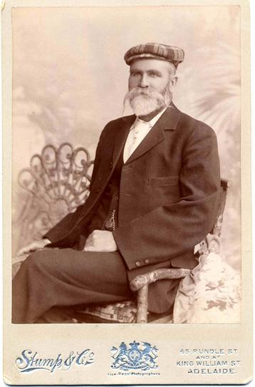
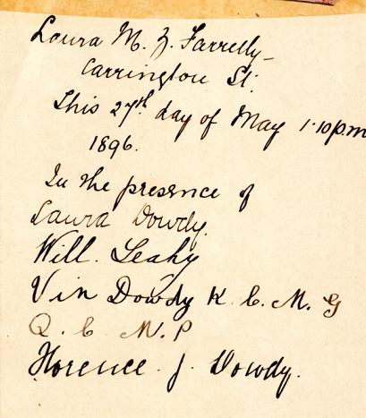

|
Ireland Branch #1
William DOUDY (later spelt Dowdy) - Birth: 1808 in Trelorney,
Lex., Ireland , Death: 14 APR 1886 in Gawler, South Australia,
Australia
+ Marriage Bridget MURNANE b: 1823 in Dundas,
Clare, Ireland, Married: 15 AUG 1842 in Sydney, New South Wales,
Australia
Children
1.i Mary Ann Cecilia DOUDY b: 1843 in New South Wales, Australia
1.ii Michael Patrick DOWDY b: 07 JUL 1845 in Adelaide, South
Australia, Australia

Believed to be Michael Patrick Dowdy
(sent by Barbara Sowter)

Back of Photo
(sent by Barbara Sowter)
+ Marriage Anna Margaret Mary LAFFAN b:
1848 in Melbourne, Victoria, Australia, Married: 29 OCT 1873
in St Francis Xavier Cathedral, Adelaide, South Australia, Australia
Children
2.i Laura Anna Mary DOWDY b: 1875
2.ii Florence Josephine DOWDY b: 1877
2.iii William Ernest DOWDY b: 10 NOV 1878 in North Adelaide,
South Australia, Australia
2.iv Vincent Thomas DOWDY b: 1882
2.v Catherine DOWDY b: 1886
1.iii Alice Maud DOUDY b: 1847
1.iv William DOWDY b: 02 AUG 1849 in Gawler River, South Australia,
Australia
1.v Henry Alfred DOUDY b: 19 AUG 1849 in Lower Light, South Australia,
Australia
+ Marriage 1 Jane Sarah STANES b: 28 SEP
1849 in St Gennys, Cornwall, England, Married: 25 JUN 1881 in
Presbyterian Manse, Mt Gambier, South Australia, Australia
Children
2.i Cecil Roy DOUDY b: 11 AUG 1882 in Pt McDonnell, South Australia,
Australia
1.vi Elizabeth Ann DOWDY b: 1850
1.vii Helen Theresa DOUDY b: 1851
1.viii George Richard DOWDY b: 10 JAN 1852 in Lower Light, South
Australia, Australia
+ Marriage Helen SIMPSON b: 09 JUN 1868,
Married: 01 NOV 1882 in St Ignatius Church, Norwood, South Australia,
Australia
A researcher provides
the following correction January 2008,
+ Marriage Kate SIMPSON
Nov 1, 1882, Kate born June 29, 1866.
Children
2.i George Clarence DOWDY b: 18 JAN 1884 in Adelaide, South Australia,
Australia
2.ii Colin George DOWDY b: 27 JAN 1888 in Payneham, South Australia,
Australia
another update 2020
+ Marriage Ellen Arnold 3 AUG 1910 (on
George's death bed); She had a daughter named Geraldine
The following sent by a descendant in 2020:
George Richard was the third son of William
and Bridget Doudy, and born on January10th 1852, about the time
his father was away seeking his fortune at the Victorian goldfields
and before the purchase of the land at Gawler River. George was
christened on January 27th 1852 and his sponsors were Michael
and Mary Murnane, Bridget's brother and his wife. George always
spelt his surname as "Dowdy" and it did not vary during
his adult life. But once again the confusion of the name occurs
as his second son's name during his life was "Colin George
Doudy" although his birth certificate shows his name as
COLIN DOWDY. George was added later. Obviously this change came
about while in the care of his grandmother, so his surname was
spelt the same way as hers. Although three years younger than
Henry, he was close to his older brothers and when old enough,
he joined them at the Gulnare farm. Later, in 1877 he was a selector
on land at Booleroo, some 50 miles north of Gulnare. He also
sold out in 1880 possibly for the same reasons as Michael and
his Father. That same year he leased the Merchant Hotel at Morchard,
but shortly afterwards went to Port Germein and leased Barton's
Hotel. As recorded in the Police Gazette of January 5th 1881,
he reported the theft of 4 empty beer casks from his hotel yard.
In November 1881 he left the Barton's Hotel and went into partnership
with a John H Lewis. They leased the Clarence Hotel in King William
Street in Adelaide from James Cornick for 1800 pounds. The Clarence
is now known as The Majestic Hotel (1984). On November 1st 1882
and while in the Clarence, George was married to Catherine (Kate)
Simpson at St Ignatius Church in Norwood. He was then 30 years
old. Kate's age is shown as 18 years on the certificate but she
was in fact 16 years old. The witnesses were Matthew Dowdy and
Frances Simpson, Kate's sister. Her father was George Frederick
Simpson, a shepherd at Wellington and mother Mary, nee MacDonald.
They had seven children and Kate was the fifth child. Her mother's
maiden name is of special significance in reference to family
history as recorded by Colin George Doudy. The confusion over
Kate's correct age occurred because, as her death certificate
showed her age as thirty two years in 1900 and her marriage certificate
as 18 years in 1882. However her Catholic baptism record shows
her birth at Truro as June 29th 1866 and a baptism on July 2nd
1866. This confirms that Kate was sixteen years old when married,
and thirty four years old when she died at East Terrace on May
17th 1900 from alcoholism. It is quite possible George was unaware
of her true age. The Land Department records show that George
surrendered his lease of the Clarence Hotel in May 1883, but
the Adelaide Directory and the Hotel Registers recorded Dowdy
& Lewis as being there until 1885. In a Police Report of
June 8th 1887, concerning clothes taken from his room at the
King Hanover Hotel, shows he had left the Clarence Hotel as recorded.
Sometime between June 1887 and before February 1889 George had
moved to an hotel in Salisbury. Their first child, GEORGE CLARENCE,
was born on January 18th 1884. Their second child COLIN was born
on January 27th 1888 at Payneham and was registered by Kate herself
a month later, giving that address. If their marriage had failed
by then, it may have been be the reason why COLIN was later left
with the MacDonald’s, Kate's grandparents.
George was licensee of a hotel in Salisbury when their eldest
son George Clarence, when five years old, contracted diphtheria
and died on February 25th 1889. He was buried in the Salisbury
Cemetery. The death certificate records George's address as "Salisbury"
and his occupation as "Licensed Victualler". In 1945
when 57 years old, George's second son Colin, began to record
what family history he knew, and he wrote he had been placed
with a Mrs MacDonald at 14 months of age. This would make the
time as March 1889 and soon after his older brother's death.
Mr McDonald was a horse cab driver and lived in the poor part
of West Adelaide. Colin George never knew his maternal grandmother's
maiden name, or that his foster family were his maternal great-grandparents.
When Kate took her baby to be cared for by her grandparents she
was twenty three years old and already on the way to being an
alcoholic. Colin does not mention in his records of seeing his
parents during the following five years, but he did write of
his carer "This poor woman did her best for me according
to her lights and mostly without reward or payment". It
would seem George was not coping with his problems and he gave
up, or was forced to give up, being a publican. A Police Gazette
of December 28th 1892 describes him as a "Labourer",
formerly a publican, when he was charged with the non-payment
of family support. His age is given as 43 years, but this is
incorrect, he was in his 41st year. The description gives his
height as 6'1", well built, fair complexion, and light brown
hair and moustache, and blue eyes. He was liable for weekly maintenance
payments of 6 shillings and owing 35 shillings and four pence.
His marriage over, the death of his eldest son, the loss of his
surviving son, and the knowledge his wife was an alcoholic so
early in her life and then in financial trouble, George needed
help. His family came to his aid and by February 8th 1893 his
arrears were paid and the warrant withdrawn. He needed to make
a fresh start, and whether he or his family, decided that he
should go to Western Australia and find it, this is what he did.
He reclaimed his son, now in his sixth year, from the MacDonald’s,
and put him in his Mother's care. Her granddaughter EFFIE COX,
was already in her charge. This was the first time Colin saw
his father since old enough to remember him, but it was not to
be long. Gold had been discovered in 1892 at Coolgardie in Western
Australia at Bayley's Hole, and shortly after at Kalgoorlie by
Paddy Hannan. This probably influenced George decision to go
West. According to his death certificate he was sixteen years
in Western Australia so he left in 1894 and his son and his family
never saw him again.
Unfortunately the damage had been done in George's life, and
at 42 years of age, with the isolation from his family and his
failures probably weighing heavily on him, it appears that he
lacked the will, or the opportunities were not there, for him
to succeed in his new environment. If he went to the goldfields
he discovered no fortune, but he may have met Ellen Arnold there,
who was then 32 years old, or perhaps they met in Perth. She
had a daughter Geraldine, born on December 16th 1894. I obtained
the birth certificate of Ellen's daughter under the name "GERALDINE
ARNOLD" showing she was born at Hardinge Street, Perth and
the registration date was January 8th 1895, but there was no
name recorded for the father. It would appear George was not
the father or his name would have been recorded. Laura Farrelly's
newspaper cuttings gave me the first evidence of George's whereabouts
in Western Australia, and I was able to find his grave site in
the Wagin cemetery from the Shire's records and with the help
of Glenys Gmeiner. She also helped me look through old editions
of the Wagin Express newspaper, and I found George's advertisements
as "Wood Merchant & Carrier" and Ellen as "Washerwoman".
I also obtained his death certificate and marriage certificate
to Elen dated to just before he died.Thanks to the help of another
member of the W A Geneaology Society who lived in Geraldton I
obtained information on Ellen's family. Ellen was born in Greenough
in 1862, the fourth child for John and Mary Ann Arnold, nee Cassey.
Her father was semi-literate and of Catholic religion, and, at
that time, he was a flour miller in Greenough, a small town south
of Geraldton. John Arnold was married and had two children when
convicted in Liverpool in 1852 of burglary. He came to Western
Australia on board the ship "Adelaide" on July 18th
1855. In 1859 he applied for his family to come to Australia,
and obtained a ticket-of-leave in York on June 16th 1859. His
family arrived aboard ship Rubens on July 3rd 1860, and he took
them to live in Greenough where he had a job as flour miller.
A daughter Catherine was born in 1861, and Ellen in 1862. He
was given a conditional pardon on January 20th 1864. Then July
1869 he was given public assistance as most of the wheat crops
in the district were destroyed by rust in 1867-68-69. November
5th 1877 he moved to Victoria but four of the children remained
in Western Australia. These included Ellen, her sisters Mary
and Catherine and her brother James. Ellen was then fifteen years
old. Just when or why George and Ellen moved to Wagin, a small
town in a farming district on the railway line south of Perth
and half way between Narrogin and Katanning is unknown. It had
been originally established for a farming community and the railway
workers. George became a wood carter and general carrier and
Ellen did washing. In the local paper "The Express"
of April 9th 1909 was an advertisement inserted by George: "
G. DOWDY, Firewood Yard, Wagin...General Carrier, Phone 38".
No doubt there would be earlier dated ones but the old papers
at "The Express" are in a very dilapidated state. There
was also an advertisement for: "The Snow White Laundry...Ellen
Dowdy, Trent Street, Wagin". We know from Bridget's obituary
that George kept in touch with his family and was advised of
the death of his wife in May 1900. Whether he told Ellen at the
time would be of interest, but he resisted a marriage to her
even when free to do so. He was obviously an alcoholic by this
time and in February 1910, he became seriously ill. He never
recovered, and according to his death certificate, he died seven
months later on August 17th from heart failure and alcoholism.
Two weeks before he died, and at his death bed, Father James
Phelan married Ellen and George on August 3rd 1910 and by a special
licence. From Matthew's will we know the family were advised
of his death.Ellen then took the opportunity to have her daughter's
name entered on the marriage certificate and on the death certificate
of George. When she left to live in Perth her daughter was GERALDINE
MARY DOWDY. During World War II years the granddaughter of George
and daughter of his son Colin, MARY LANGLEY nee Doudy, lived
in Perth and she told her brother Colin she had heard of a "Widow
Dowdy" who owned a quarry. Ellen never married again, as
her death certificate gives "Dowdy" as her surname.
She died on April 18th 1944 and is buried in the Karrakatta Cemetery
in the Catholic section. Her death certificate shows her age
as seventy eight years, four years younger than her true age
of eighty to years.
1.ix Matilda Josephine DOUDY b: 20 APR
1858 in Arthurton, South Australia, Australia
1.x Laura Ethel May DOUDY b: 1859
1.xi William Herbert Hurtle DOUDY b: 24 JUN 1860 in Pt Gawler,
South Australia, Australia
1.xii Johannah Louise DOWDY b: 07 DEC 1862 in River Light, Pt
Gawler, South Australia, Australia
1.xiii Joseph DOUDY b: 1863
1.xiv Matthew Francis DOWDY b: 14 NOV 1865 in Lower Light, South
Australia, Australia
1.xv Joseph James DOUDY b: 1867 in Lower Light, South Australia,
Australia
|

 Williamd
Dowdy
Williamd
Dowdy